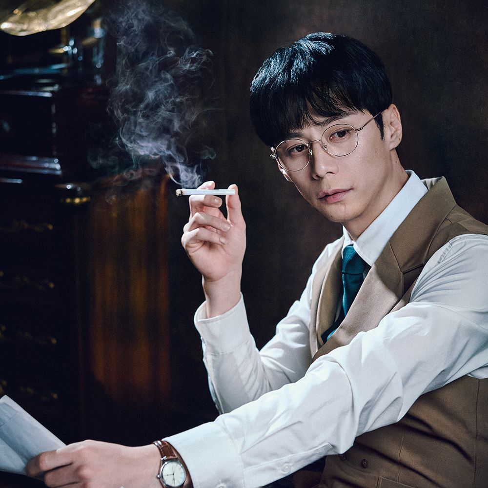
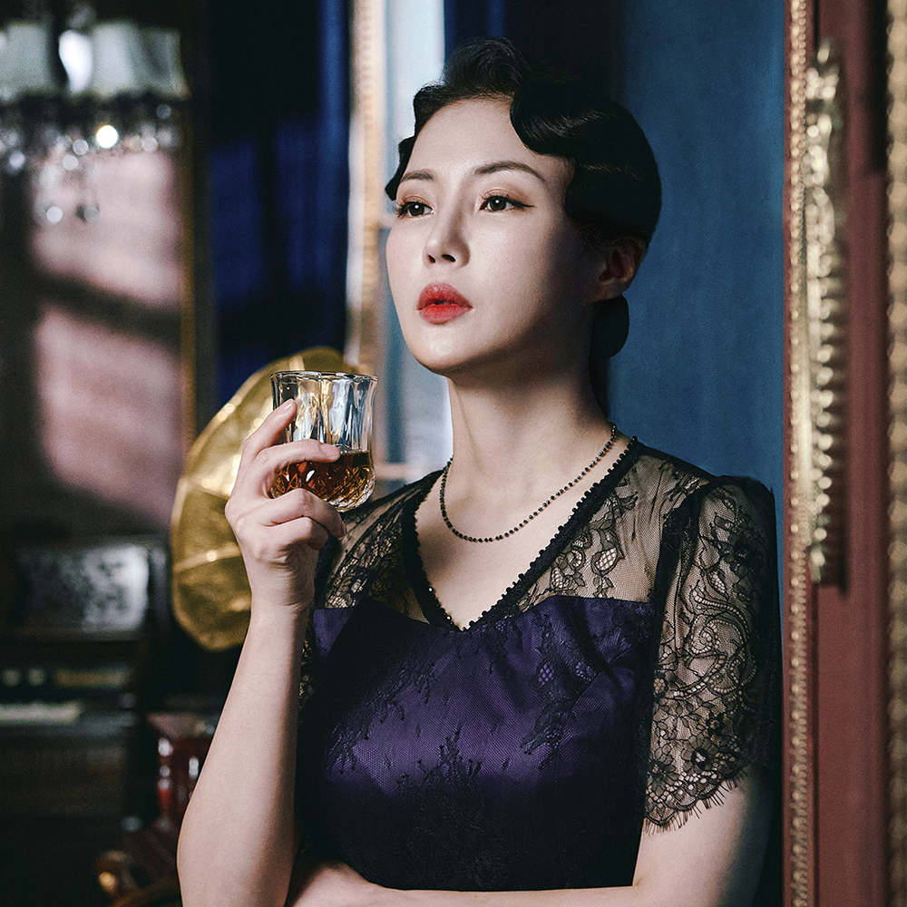
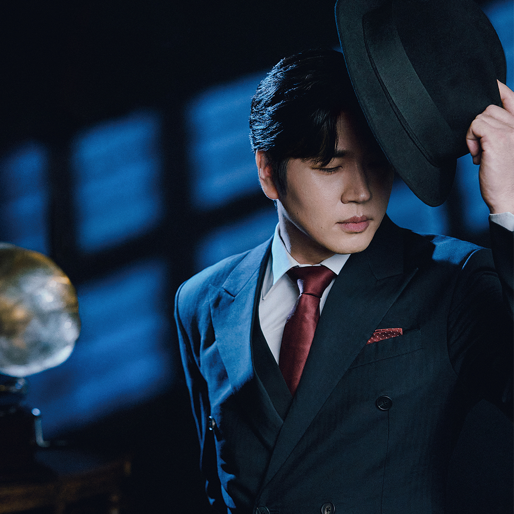

공연 영상
"우린 새로운 세상으로 갈거야, 준비됐어?"
캐릭터 목록

김우진
(배우: 주민진)
윤심덕
(배우: 안유진)
사내
(배우: 정민)작품/캐릭터 소개
"1926년 8월 4일 새벽 4시, 관부연락선 도쿠주마루.
한 여자와 남자가 바다로 몸을 던진다." (공연 中)
천재 극작가 김우진, 조선의 소프라노 윤심덕, 그리고 그 둘을 잇는 사내.
김우진과 사내는 한 편의 희곡을 쓴다. 희곡의 결말은 어땠을까?
나나링의 작품에 대한 사담
사내라는 캐릭터는 굉장히 매력적이지만, 배우로서는 표현하기 힘든 캐릭터라고 생각해.
이 작품을 쓴 작가도 모를 만큼, 無에서 有를 만드는 캐릭터이니까.
하지만, 작품이 지금까지 공연되었다는 건,
이 캐릭터를 만들어가며, 연기하는 배우들도 매력을 느낀다는 이야기가 아닐까 싶어.
희곡의 원래 결말은 "윤심덕이 김우진을 총으로 쏜다, 그리고 윤심덕도 머리에 총을 겨누며 자살을 한다"
하지만, 우진과 심덕은 자아를 찾아서 결국 관부연락선에서 투신을 해.
사내는 자아를 찾아가는 둘에게 분노를 표하며, 둘을 죽이려고 하지만, 결국 실패하고 말아.
마지막은 사내가 허탈한 듯 변해버린 희곡의 결말을 읽으며 극은 끝나.
둘의 행복한 모습이 담긴 결말을 말이야.
사내는 자신의 목표를 위해 둘을 이용했지만, 자신의 목표를 이루지 못한 채,
결국 쓸쓸한 결말을 맞이해.
사내는 참 매력적이기도 하지만, 어떻게 보면 외로움의 형상 그 자체라고 볼 수도 있을지도?